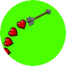
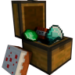
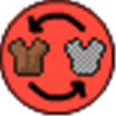

Experience
Here is a list of all my current projects, these can be anything from a game to a Java plugin. Click any of the headers to go to the project page. For some spigot plugins you need to be logged in to be able to see the page.
AdvancedArrowTrails
|  | This project was my first premium spigot/bukkit plugin, it adds trails behind arrows that players shoot and gives them access to a GUI where they can pick a trail from. This plugin costs 3$ on spigotmc.org and at the time of writing sold 61 copies. |
LootChestRewards
|  | This project was my second premium spigot/bukkit plugin, it adds chests to servers which players can open to receive different rewards that can be set up in a config. |
Home++
 |
This project was one of my first bukkit plugins I made using Java. The plugin allows players to set a home location and teleport back and forth between their current and home location. |
EasySwap
|  | This plugin allows better and easier armor switching by players in their server, instead of unequiping armor and then re-equiping the new armor it can be right clicked and will automatically swap. |
GiftChests
| This plugin allows better and easier armor switching by players in their server, instead of unequiping armor and then re-equiping the new armor it can be right clicked and will automatically swap. |